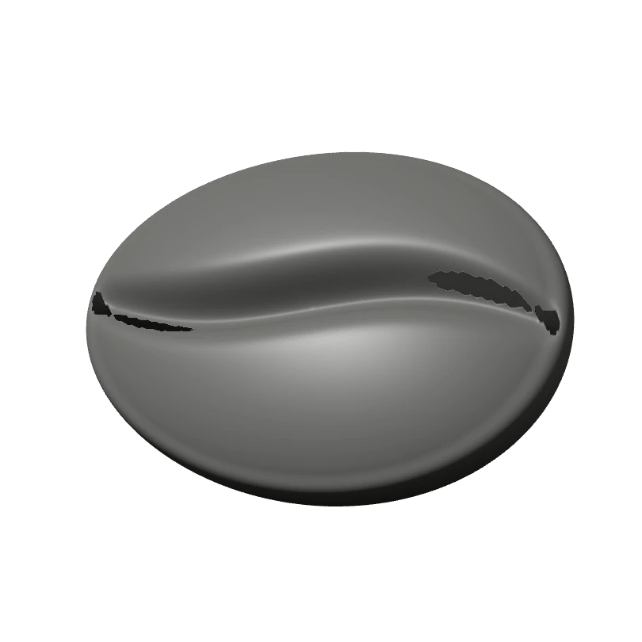

Bild folgt
00 · Spike S1 WebGL
Musterdaten, intern
Für uns ist Kaffee angewandte Physik.

01 · Kräfte
Aus der Bohne wird der Puck.
Die Figur steigt auf, folgt der Maus, dreht sich beim Scrollen und rückt zur Seite, während diese Sektion den Hero zudeckt.
Der Wert liegt im Zustandsspeicher. Ab Etappe 3 folgt die Form dem Kräfte-Slider: 01 Bohne, ab 03 Puck.
02 · Sichtfenster
Ohne Szene im Bild ruht die Grafik.
Jede Szene arbeitet nur, solange ihre Sektion höchstens eine halbe Bildschirmhöhe vom Bild entfernt ist. Hier ist keine Szene nah, die Bildschleife der Grafik steht still.
-
01
Wärmen
Röstet die grüne Bohne.
-
02
Mahlen
Gehärteter Stahl mahlt die geröstete Bohne.
-
03
Verdichten
Das Pulver wird zum Puck getampt.
03 · Schlussfläche
Die Fläche folgt der Kante.
Hinter dieser Sektion zeichnet die hintere Ebene eine deckende Masstafel. Ihre Fläche kommt mit der Oberkante von unten herein und geht mit der Unterkante nach oben hinaus.
Ohne WebGL, bei reduzierter Bewegung und auf schmalen Geräten trägt die Sektion ihre eigene Fläche aus dem Thema.